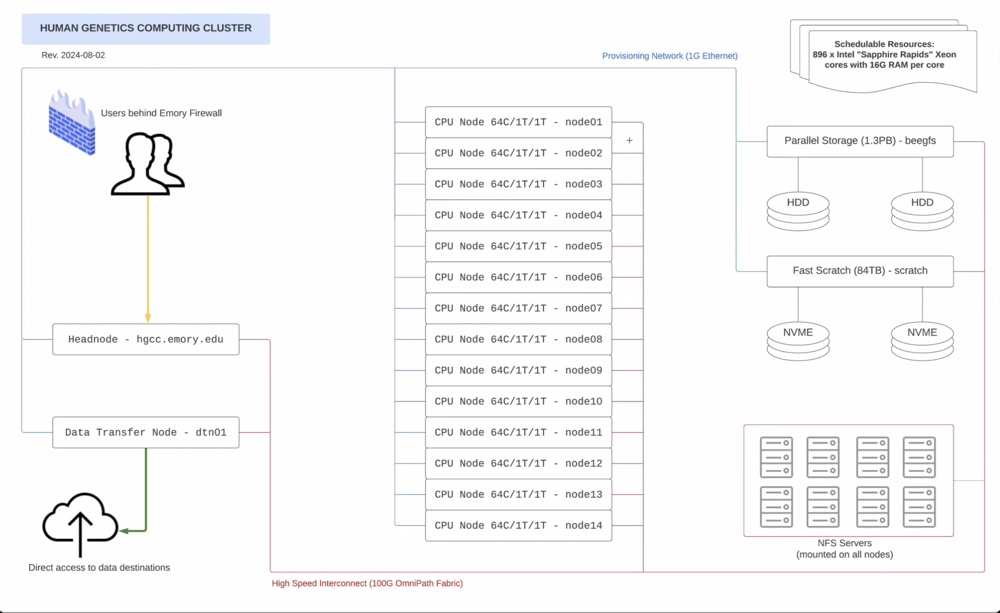

head.hgcc; 1 Data Transfer Node (DTN)
/scratch/
/nfs/yangfss2/data/
~/yangfss2/commons/[user] : User work directories.
icebreaker are not accessible and not coped into this new system.shared/** : Shared data directories and software directory shared/Software/ for the lab.projects/ : Project directories shared by the lab.public/ : Files to be shared with other groups. Public to be viewed by all users on the cluster.
Login to Emory VPN .
Login using ssh by typing the following command in the terminal with your Emory Net ID and Emory password:
ssh <Emory_Net_ID>@hgcc.emory.edu
SSH login without typing password : repeat this setup for each of your local computer.
First, generate a pair of authentication key under the home directory on your local computer: ssh-keygen -t rsa.
~/.ssh/id_rsa.~/.ssh/id_rsa.pub. Second, run the following command under the home directory on your local computer to create a directory ~/.ssh under your home directory on the HGCC cluster and append your local authentication key to ~/.ssh/authorized_keys on HGCC:
ssh-copy-id <Emory_Net_ID>@hgcc.emory.edu/home/<jyang51>/ to local directory ~/HGCC/. Replace <jyang51> by your EmoryNetID.
sshfs <jyang51>@hgcc.emory.edu:/home/<jyang51>/ ~/HGCC/ -o auto_cache -ovolname=HGCC -o follow_symlinksCommand rsync is recommended
rsync [options] [SOURCE] [DESTINATION]
Command scp can also do the job
scp <path_to_local_file> <Emory_Net_ID>@hgcc.emory.edu:<destination_remote_path_on_hgcc>rsync is recommended for moving data files within the cluster, between local and cluster, between clusters.cp also copys data.rm.mkdir.mv.ls.ls -l -h.vi or nano to edit text files on the cluster. Recomend edit text files through local mounted directory.less, cat. less -S is recommended for viewing large text files on cluster.gzip.gunzip [file_name.gz].tar for zipping and unzipping directories.man to see user manual/instructions of Linux tools, e.g., man ls .| to take output from the command before | as the input for the command after |. For example, cat xx_file.txt | head will print the top 10 rows of the xx_file.txt file on the bash window.alias to set up your own shortcup of commands in the ~/.bashrc file. See Examples. Example alias commands such as alias c='clear', can be seen through /home/jyang51/.bashrc. This would set up c as an alias/short-cut for the command clear.Command man [command] would give help page for Linux commands, e.g., man rsync. Type q to exit from the help page.
srun -N 1 -n 1 --pty bash.
-N is the number of nodes, -n is number of tasks, --pty gives you a pseudo terminal that runs bash. sbatch under headnode.
/scratch/ to avoid extensive I/O between compute node memory and storage disks.
mkdir -p /scratch/tmp_jyang51/, with a unique directory name tmp_jyang51. rsync [path_to_data_file]/[data_file_name] /scratch/tmp_jyang51/. /scratch/tmp_jyang51/. rsync /scratch/tmp_jyang51/ [path_to_output_files]/.rm -rf /scratch/tmp_jyang51.README.md file for each data directory.spack find -x to list all installed software modules on HGCC.spack find --loaded to list all loaded software modules.${PATH} by which [software_name].${PATH} to avoid typing full directory of the executible file. export PATH="~/.local/bin:$PATH" # add local directory to PATH. add this to ~/.bashrc file to avoid running this for each session.
echo $PATH; # show current PATH directories
cd ~/.local/bin; #
ln -s [directory_to_executible_file]; # create symbolic link to the softwarespackspack load [software_name].
spack load plink2@2.00a4.3 to load plink.plink2 --help to see plink user mannual after loading plink.spack unload plink2@2.00a4.3.R in the current session to start an R session after loading R by spack load r@4.4.0.python in the session to start a python session after loading Anaconda3 by spack load anaconda3@2023.09-0.~/.local/. Include ~/.local/bin/ in the $PATH environment variable. Create a symbolic link to software executible file under ~/.local/bin/.conda to install python libraries under your virtual python environment. /nfs/yangfss2/data/shared/bin by the following commands:export PATH="/nfs/yangfss2/data/shared/bin:$PATH"; # include this line of command in your `~/.bashrc` file to automatically run this for each session.
cd /nfs/yangfss2/data/shared/bin
ln -s [tool_directory]~/.bashrc file~/.bashrc file under your home directory to automaticlly run commands for each session.
sbatch to submit jobs. Set arguments to sbatch in a wrapper shell (job submission) script, for example, you may use command sbatch norm_sim.sh to submit an array job to run 10 times of simulations, with norm_sim.sh given as follows: #!/bin/bash
#SBATCH --job-name=normal_sim ## specify job name
#SBATCH --nodes=1 ## request 1 node
#SBATCH --mem=8G ## request 8G memory
#SBATCH --cpus-per-task=4 ## request 4 cpus/cores per job
#SBATCH --time=24:00:00 ## specify job running time for 24 hrs
#SBATCH --output=./SLURM_OUT/%x_%A_%a.out ## specify slurm output file directory
#SBATCH --error=./SLURM_OUT/%x_%A_%a.err ## specify slurm error file directory
#SBATCH --array=0-10 ## Submitting 10 instances of commands listed below
## The following commands will be run for 10 times by 10 jobs under the specified array. Each with their unique task ID given by $SLURM_ARRAY_TASK_ID, in {1..10}.
## Change working directory
cd /home/jyang51/yangfss2/public/ExampleData
## Create SLURM_OUT/ under the current working directory to save slurm output and error files
mkdir -p ./SLURM_OUT/
## Print SLURM array task ID $SLURM_ARRAY_TASK_ID (1..10)
echo "My SLURM_ARRAY_TASK_ID: " $SLURM_ARRAY_TASK_ID
## Load R software
spack load r@4.4.0
## Using the Rscript to simulate a vector x from standard normal distribution and write x to a text data file under /home/jyang51/yangfss2/public/ExampleData/
## Use the SLURM array task ID to save unique output data files, or configue the job.
Rscript /home/jyang51/yangfss2/public/ExampleScripts/norm_sim.R /home/jyang51/yangfss2/public/ExampleData/ $SLURM_ARRAY_TASK_IDnorm_sim.R script given as follows:#!/usr/bin/env Rscript
Sys.setlocale('LC_ALL', 'C')
###############
options(stringsAsFactors=F)
###############
args=(commandArgs(TRUE))
print(args)
if(length(args)==0) {
stop("Error: No arguments supplied!")
} else {
out_prefix = args[[1]]
n_sim = args[[2]]
}
x = rnorm(100, mean = 0, sd = 1)
print(paste("mean of simulated data =", mean(x)))
print(paste("standard deviation of simulated data =", sd(x)))
print("Write simulated data to a text file:")
write.table(data.frame(x = x), file = paste0(out_prefix, "sim_", n_sim, ".txt"), quote = FALSE, sep = "\t", row.names = FALSE)squeue to display current slurm job queue.scancel [jobid] used to cancel/kill a job.scontrol used to show information about running or pending jobs.
scontrol show job [jobid] to show system details of a submitted job.Use command srun to run an interactive instance: srun --pty bash.
srun -N 1 -n 1 --pty bash
spack load r@4.4.0
Rexit.Use command sinfo to report the state of the cluster partition and nodes.
df -hdu -h -d1